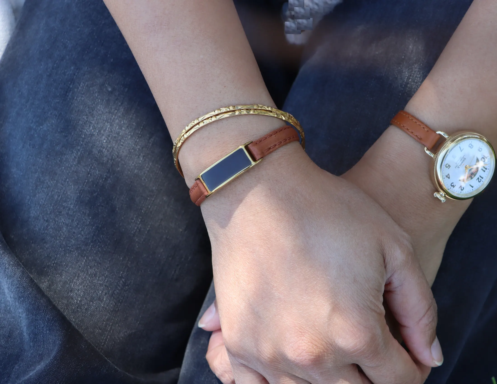

How Tight Should a Fitness Tracker Be? Secure Shouldn’t Mean Squeezing
Secure enough to stay in contact with your skin, without squeezing.
Aim for contact without pressure
A wrist tracker needs a stable position, but a tighter band is not automatically a better fit. The goal is for the case to rest against your wrist while you move naturally.

Garmin’s wear and care guidance describes a snug, comfortable fit for wrist-based heart-rate sensing during activity. It also recommends adjusting wear habits to help avoid irritation. Follow your own device’s instructions for placement and care; there is no universal band setting that works for every case and wrist.
Check the fit in three everyday positions
First, hold your arm relaxed at your side. Does the tracker stay where you placed it, or rotate freely around your wrist? A device that continually turns needs a different adjustment or fit.
Next, bend your wrist and open and close your hand. Notice whether the case edge or buckle presses into you. If the tracker only feels comfortable while your wrist is perfectly straight, the fit is not working for normal wear.
Finally, rest your arm on a desk or pillow. This exposes pressure points you might miss while standing. It is especially useful if you plan to track sleep.
Make small adjustments between checks. Stop if the band feels painful or restrictive. If your skin becomes irritated, take the tracker off; keeping it on more tightly is not a solution.
A large case cannot be fixed with band tension
If a tracker spans the width of your wrist, you may find yourself tightening the band to stop the case rocking. That can leave you with an uncomfortable band and a case that still does not sit well.
Look at case width, height and how the strap bends around your wrist. Band length alone does not tell you whether a device will fit. Our small-wrist guide explains what to look for before buying.
Ray is a 7-gram, screenless wrist tracker designed around a small form factor. That makes it an option if the bulk of a larger watch is the problem. You still need a band adjustment that feels secure and comfortable on your own wrist.
Recheck before bed and after activity
The fit you choose for a workout may not be the one you want for sleeping. Recheck comfort when your routine changes, and follow the device and band maker’s care instructions after sweat or moisture.
For sleep, pay attention to the position of the clasp as well as the sensor. A clasp beneath your wrist can feel different when your arm is tucked under a pillow. See our comfortable sleep tracker guide for the other trade-offs to consider.
Do not assume a mark or a feeling of pressure means the tracker is collecting better data. Comfort and sensor contact should work together.
What if the data still looks wrong?
Fit is one thing to check, not a diagnosis for every missing or unusual reading. Review the device’s placement guidance, battery level and app instructions before changing the band again.
For Ray, contact us if you are unsure about a particular fit or reading. Describe how you wear it and when the issue appears. That is more useful than repeatedly tightening a band that already feels secure.
A good everyday fit is one you can move in, rest in and keep wearing comfortably. If a device only stays put when it squeezes, reconsider the band or case size.